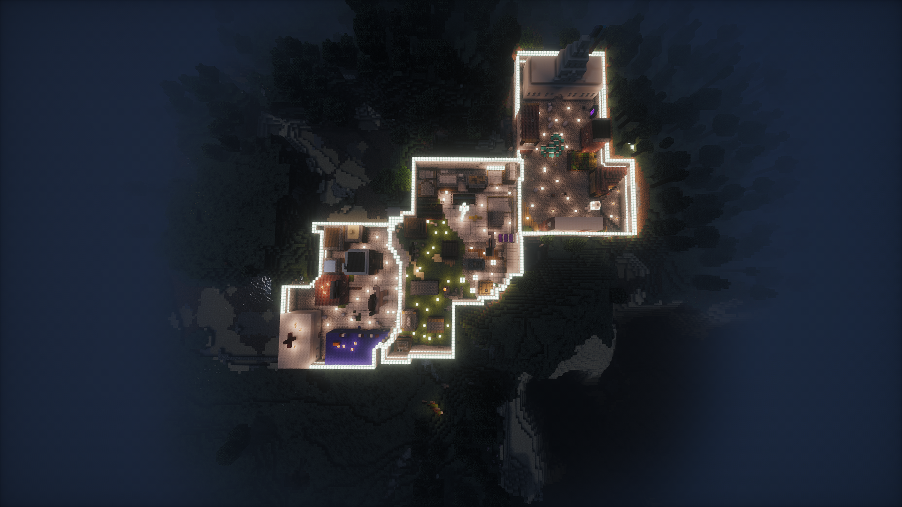

Козань
Столица и основной известный город Эфритонии.
Общий вид страны, столица и известное административное деление.

Столица и основной известный город Эфритонии.
В государстве насчитывается три региона. Их названия и точные границы ещё предстоит внести.
Четвёртый регион находится в стадии строительства.